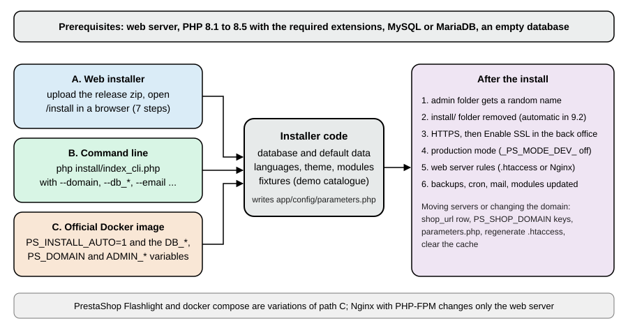

Installation and Local Environments
|
This content was generated with the assistance of AI and should be verified against the official documentation before being relied on in production. |
This page covers every way to get a PrestaShop 9.2.0 shop running, from an empty server or an empty Docker host to a
shop you have secured, and how to move that shop later. It was written against PrestaShop 9.2.0 (released 2026-09-30) and
checked on 2026-10-27 with the official prestashop/prestashop Docker images (PHP 8.5.12, Apache 2.4.68), MySQL 8.4.13,
Nginx (stable) and a command-line install on a second, throwaway shop. It applies to the open source software on your
own hardware or hosting; it does not cover hosted PrestaShop offerings. Read
Versions and Support first if you have not picked a version.
The page follows the order you meet the problems in: requirements, the three installation paths (web installer, command line and Docker), the web server, the steps after the install that matter for security, and moving a shop to a new server or domain. The running example, Pocket Coffee, is installed with the command-line installer for a Spain shop with Spanish and English storefronts, and with Docker Compose for local development.

Requirements
PrestaShop 9 needs a web server, PHP and a database. The official requirements, as of 9.2:
| Requirement | Configuration |
|---|---|
Web server |
Apache 2.4 or later (2.2 is not recommended). Nginx 1.0 or later also works with extra configuration, see Nginx. PrestaShop works best on Unix-based systems such as Linux and macOS; Windows might work but is not actively supported. |
PHP |
8.1 to 8.5, with 8.5 recommended for 9.1 and 9.2. The installer of 9.2.0 refuses to run on a PHP version outside that range. |
Database |
MySQL 5.7 or MariaDB 10.2 minimum; the documentation recommends a recent version. The installer does not check the version. Create the database with the |
Memory |
|
PHP extensions and settings
The following PHP extensions are required: curl (download of modules and localisation packs), dom, fileinfo, gd
(thumbnails), iconv, intl (localised amounts), json, mbstring, openssl, PDO, pdo_mysql, SimpleXML and
zip (expanding modules and packs). allow_url_fopen must be On, because PrestaShop reads remote files, among other
things during payment processing; allow_url_include should stay Off.
On a host you can check them with the project’s phppsinfo.php tool (download it from the PrestaShop/php-ps-info
repository, upload it next to the shop and open it in a browser; the documentation says the login and password are
prestashop, so remove it afterwards). In a container or on the command line, ask PHP directly.
docker exec prestashop php -r 'foreach (["curl","dom","fileinfo","gd","iconv","intl","json","mbstring","openssl","PDO","pdo_mysql","SimpleXML","zip"] as $e) { echo str_pad($e, 12), extension_loaded($e) ? "ok" : "MISSING", PHP_EOL; } echo "allow_url_fopen=", ini_get("allow_url_fopen") ? "On" : "Off", PHP_EOL;'All thirteen extensions printed ok in the official image, and allow_url_fopen=On and allow_url_include=Off were the
settings; the image also ships bcmath, soap, sodium and OPcache, and a CLI memory_limit of 512M. Replace
prestashop with the name of your own container, or drop docker exec prestashop to run the check on a host.
Creating the database
The installer can create the database (--db_create=1 on the command line) but it then uses the server default
collation. On the MySQL 8.4 test server that default is utf8mb4_0900_ai_ci, while the PrestaShop documentation asks for
utf8mb4_general_ci. Create the database yourself with the collation the documentation names, and give the shop a
dedicated user that owns that database only.
CREATE DATABASE pocketcoffee CHARACTER SET utf8mb4 COLLATE utf8mb4_general_ci;
CREATE USER 'pocketcoffee'@'%' IDENTIFIED BY '<choose-a-strong-password>';
GRANT ALL PRIVILEGES ON pocketcoffee.* TO 'pocketcoffee'@'%';
FLUSH PRIVILEGES;Source: PrestaShop devdocs: Installation
Run on MySQL 8.4.13 these statements succeeded, and information_schema.schemata then showed pocketcoffee with
utf8mb4 and utf8mb4_general_ci. Replace the host part % with the host the web server connects from on a real
server (for example localhost); it was % here because the database ran in another container. With MySQL 8 and a
mysql client or PHP driver old enough not to know caching_sha2_password or the utf8mb4 charset, the official Docker
README lists workarounds (force mysql_native_password, change the server charset); the PHP of the 9.2.0 image connected to
MySQL 8.4 without any of them.
Choosing an installation path
| Path | Use it for | Notes |
|---|---|---|
Release package and web installer |
A shop on shared or managed hosting, or a first look. |
Upload the single zip distributed on prestashop.com (GitHub carries no release zip for 9.x), open the installer in a browser and answer seven steps. |
Command-line installer |
Scripted, repeatable installs on a server you can reach by SSH, CI jobs and staging copies. |
Every web installer option is an argument. Nothing to click. |
Official Docker image |
Local development, tests, throwaway environments and some production setups. |
|
PrestaShop Flashlight |
Development and testing with extra tools in the containers. |
A separate project of the PrestaShop organisation with docker compose examples; not for production. |
AMP stack on your own machine (XAMPP, MAMP, WampServer, a Linux LAMP) |
Development without Docker. |
You install Apache, MySQL and PHP yourself, then use the web or command-line installer. |
Whichever path you take, the result is the same: files in a folder, an app/config/parameters.php with the database
settings and a set of keys, and a database with the tables, the default data, the languages, the theme and the
modules you selected.
The release package and the web installer
PrestaShop 9 is distributed as a single zip on prestashop.com. In the zip you find index.php and prestashop.zip
(plus Install_PrestaShop.html). The official image carries the same payload: its /tmp/data-ps folder holds
Install_PrestaShop.html, index.php and the unpacked prestashop folder, and the shop’s INSTALL.txt describes the
upload routine: upload index.php and prestashop.zip to the server, browse to index.php (it unzips the archive and
redirects to the installer), follow the installer and delete the install folder afterwards. As of 9.2 the installer
deletes that folder itself.
The developer version (a clone of the Git repository, or the develop branch for contributors) is different: it needs
composer install for the PHP dependencies and make assets with Node.js 20.x to compile the JavaScript and CSS, and its
installer lives in install-dev rather than install. Use it only if you work on PrestaShop itself.
File permissions
PrestaShop needs recursive write permission on these folders: admin-dev/autoupgrade (an autoupgrade folder inside the
admin folder), app/config, cache, config, download, img, log, mails, modules, override, themes,
translations, upload and var. The files must belong to the user that runs PHP (www-data on Debian and Ubuntu and in the
official image). The documentation’s development shortcut, running Apache as your own user, must never be used in
production: set owners and modes folder by folder instead, and avoid mode 777.
chown -R www-data:www-data /var/www/html
find /var/www/html -type d -exec chmod 755 {} \;
find /var/www/html -type f -exec chmod 644 {} \;The three commands are the usual starting point for a host install (the official image already does this); they were not
run on a host for these pages. In the image every file of the shop belongs to www-data; the folders checked (var, app/config, img, modules and
themes) have mode 755 and parameters.php and .htaccess mode 644.
The seven steps
Opening the shop before it is installed redirects to the installer (the test container answered 302 to /install/).
The installer lists seven steps, which are the strings the installer itself displays:
-
Choose your language: the language of the installer and the default language of the shop.
-
License agreements: the licence terms (the core is licensed under OSL 3.0, the modules and themes under AFL 3.0), a checkbox to accept them and a privacy note.
-
System compatibility: the PHP version, the ability to upload files and create files and folders, the required extensions and the Symfony requirements listed in Requirements; the installer cannot continue until the required tests pass.
-
Store information: the store name, country, shop timezone, an Enable SSL choice, and the administrator account (first name, last name, e-mail address, which is the back-office user name, and a password of at least eight characters that must reach a minimum strength score, typed twice).
-
Content of your store: the theme to install, whether to install the demo products (recommended only while you are learning PrestaShop), and whether to install all modules (recommended) or a selection.
-
System configuration: the database server address (add
:portfor a port other than 3306), name, login, password, tables prefix, the "Drop existing tables" choice and a button that tests the connection. Change the defaultprestashopdatabase name andps_prefix to something specific to your project. -
Store installation: the progress page. When it finishes it shows the login information, a reminder to delete the
installfolder (the 9.2 installer has already removed it) and links to the back office and the front office.
The seven titles were read from the installer page of the 9.2.0 image and the field descriptions of steps 2 to 7 from the installer’s own view templates; the steps were not clicked through in a browser, because the command-line installer runs the same code and is easier to repeat.
The command-line installer
install/index_cli.php (install-dev/index_cli.php on a development checkout) runs the same installation without a
browser. It has existed since PrestaShop 1.5.4. Start it as the web server user from the install folder.
cd /var/www/html/install
php index_cli.php \
--domain=pocketcoffee.example.test \
--db_server=127.0.0.1:3306 \
--db_name=pocketcoffee \
--db_user=pocketcoffee \
--db_password="${DB_PASSWORD}" \
--prefix=pcf_ \
--name="Pocket Coffee" \
--country=es \
--language=en \
--timezone=Europe/Madrid \
--email=owner@example.test \
--password="${ADMIN_PASSWORD}" \
--firstname=Ada --lastname=Lovelace \
--fixtures=0Run with those options (the test values localhost:8095, a throwaway database user, --db_create=1 and prefix pcfa_)
on a fresh container it printed, in order, "Installing database", "Dropping database tables", "Installing default data",
"Creating shop", "Installing languages: en, es", "Populating database", "Configuring shop", "Installing modules on disk",
"Installing theme hummingbird", the line telling that the admin folder was renamed (to admin867rtqhwnkf2hocbvsx in that
run), "The install/ folder was removed." and finally -- Installation successful! --, in about 34 seconds. The
front office then answered 200, the shop had 80 modules, no products (--fixtures=0), the timezone Europe/Madrid and
two active languages: choosing --country=es added Spanish next to the English default.
Arguments
| Argument | Meaning | Default |
|---|---|---|
|
Which steps to run: |
|
|
Language ISO code of the default language (a 639-1 code with a translation file in |
|
|
Install every available language. |
|
|
Shop timezone from the tz database. |
|
|
Base URI appended after the domain, for a shop in a sub-folder. |
|
|
Domain name of the shop, without the protocol; add |
|
|
Database host. Add |
|
|
Database credentials. |
|
|
Database name. The documentation strongly recommends changing the default. |
|
|
Drop the existing tables before installing. |
|
|
Create the database if it does not exist. |
|
|
Table prefix. The documentation strongly recommends changing the default. |
|
|
MySQL engine, |
|
|
Shop name. |
|
|
Shop country, an ISO 3166 alpha-2 code. |
|
|
Administrator name. |
|
|
Administrator e-mail and password. |
|
|
Show the licence after the installation. |
|
|
Theme to install, from |
empty |
|
Enable SSL. |
|
|
Enable the rewrite engine (friendly URLs). |
|
|
Install the demo products, the "Installation of demo products" option of the web installer. |
|
|
Modules to install, comma separated, from |
all |
The Docker entrypoint also passes --newsletter and --send_email, which exist in the installer but are not listed by the
built-in help.
Pitfalls of the command-line installer
-
The default administrator password is not the one in the documentation. The online table lists "Correct Horse Battery Staple"; the source of the 9.2.0 installer (and its built-in help, printed by running
php index_cli.phpwithout arguments) saysPr3st4Sh0P. Always pass--password, and change it after the install: the console commandprestashop:employee:change-passwordis new in 9.2. -
Arguments are visible. A password given on the command line appears in the process list and in the shell history. Install with a throwaway password and change it, or run the installer from a protected deployment script.
-
The database must exist unless you pass
--db_create=1, and--db_clear=1is the default, so running the installer twice against the same database erases the first shop. -
The printed back-office address has a doubled slash (
http://localhost:8095/admin867rtqhwnkf2hocbvsx//), which is harmless; remove one slash. Find the folder name withlsat any time. -
PHP outside 8.1 to 8.5 stops the installer with the message "Your server is running PHP x, but PrestaShop requires a PHP version between PHP 8.1 and PHP 8.5." (a message printed by
install/index_cli.phpitself). -
The CLI installer needs memory. The Docker entrypoint runs it with
php -d memory_limit=-1; if your CLImemory_limitis low, the install can die in the middle of the module step.
The official Docker image
The prestashop/prestashop image (source repository PrestaShop/docker) packages PHP, Apache or PHP-FPM, and a release
of PrestaShop. It does not contain a database: you run MySQL or MariaDB next to it. On first start its entrypoint script
copies the shop from /tmp/data-ps/prestashop into /var/www/html, optionally renames the install and admin folders,
and, when PS_INSTALL_AUTO=1, runs the command-line installer with arguments built from environment variables. On later
starts it finds app/config/parameters.php and only prints "PrestaShop Core already installed".
This image is built for one host. Turning it into an immutable image that several pods share, with a managed database outside the cluster, is covered in Cloud: Container Image and Cloud: Reference Architecture.
Environment variables
These are the variables the 9.2.0 image defines, with their defaults as printed by docker run --entrypoint env and as used by
the entrypoint script.
| Variable | Default in the image | Effect |
|---|---|---|
|
|
|
|
unset ( |
Database host. The installer is given |
|
|
Database port. |
|
|
Database name, user, password and table prefix. Change all four, especially the password. |
|
unset ( |
Domain, with port, under which the shop is reached from the browser. When unset the entrypoint uses the container’s own IP address ( |
|
|
Default language, country and whether to install every language. |
|
|
First administrator. The defaults are public; always override them. |
|
|
Enable SSL at install time. |
|
|
Read with a PHP boolean cast by |
|
|
Defines |
|
|
Defines |
|
|
Rename the folders before the install. Do not change |
|
|
Drop, or create, the database before installing. |
|
|
For shops whose IP or port changes between runs: the entrypoint adds |
Source: PrestaShop/docker: README and entrypoint and PrestaShop devdocs: Installing PrestaShop with Docker
The defaults above are what the image does. The documentation’s table disagrees with the image on several lines, which
causes real mistakes: it lists PS_INSTALL_AUTO as 1, PS_FOLDER_ADMIN as admin-dev, PS_FOLDER_INSTALL as
install-dev, PS_COUNTRY as fr, DB_SERVER as mysql, DB_PASSWD as prestashop, ADMIN_PASSWD as "Correct Horse
Battery Staple" and PS_DEV_MODE as 1. In the 9.2.0 image the values are those in the table above. In particular the
image does not start in developer mode unless you ask for it.
Docker Compose
The following Compose file starts MySQL 8.4 and PrestaShop 9.2.0, installs the shop automatically for the domain
localhost:8096, keeps the database and the shop files in volumes, and waits for MySQL to be healthy before starting the
shop. The three passwords come from a .env file next to it, which you create with your own values and never commit.
services:
db:
image: mysql:8.4
restart: unless-stopped
environment:
MYSQL_ROOT_PASSWORD: ${MYSQL_ROOT_PASSWORD}
MYSQL_DATABASE: prestashop
MYSQL_USER: prestashop
MYSQL_PASSWORD: ${MYSQL_PASSWORD}
volumes:
- dbdata:/var/lib/mysql
healthcheck:
test: ["CMD", "mysqladmin", "ping", "-h", "127.0.0.1", "-u", "root", "-p${MYSQL_ROOT_PASSWORD}"]
interval: 5s
timeout: 5s
retries: 20
prestashop:
image: prestashop/prestashop:9.2.0
restart: unless-stopped
depends_on:
db:
condition: service_healthy
ports:
- "8096:80"
environment:
DB_SERVER: db
DB_NAME: prestashop
DB_USER: prestashop
DB_PASSWD: ${MYSQL_PASSWORD}
PS_INSTALL_AUTO: "1"
PS_DOMAIN: localhost:8096
PS_LANGUAGE: en
PS_COUNTRY: ES
ADMIN_MAIL: owner@example.test
ADMIN_PASSWD: ${ADMIN_PASSWD}
PS_DEV_MODE: "0"
volumes:
- psdata:/var/www/html
volumes:
dbdata:
psdata:docker compose up -d
docker compose logs -f prestashopThis file was run with docker compose up -d. docker compose config -q accepted it, MySQL became healthy, and the shop
container logged the installer messages ending with "Installation successful!". The front office answered 200 on
http://localhost:8096/ with the demo products and the back office was in the folder printed by the installer
(admin270x0zcwllwpnqk6aw1 in that run). The container showed a restart count of 1, for the reason below.
What the entrypoint does, and the problems it has
The entrypoint of the 9.2.0 image behaves as follows, and three of its behaviours surprised the test runs.
-
It creates an
install.lockfile in/var/www/html, copies the shop from/tmp/data-ps/prestashop(without overwriting anything that exists), appliesdefines_custom.inc.php, runs any scripts in/tmp/pre-install-scripts/, renames the install and admin folders if the variables differ from the defaults, and runs the installer. -
After a successful install it runs
rm -r /var/www/html/install/. Since PrestaShop 9.2 the installer has already removed that folder, sormfails with "No such file or directory" and the script, which runs withset -e, exits with status 1 before it removesinstall.lockand before it starts Apache. The shop is completely installed at that point. Withrestart: unless-stopped(as in the file above) Docker simply restarts the container, which now findsapp/config/parameters.php, prints "PrestaShop Core already installed" and starts Apache. Without a restart policy,docker start <container>has the same effect. The leftoverinstall.lockis harmless. -
A volume on
/var/www/htmlis required. Without one, the installer’s final step, which renamesadminto a random name, fails with "The admin folder could not be renamed" because PHP’srename()returns "Invalid cross-device link" on Docker Desktop’s overlay file system. The Compose file above has the volume. -
Setting
PS_FOLDER_ADMINto a non-default value fails: the entrypoint moves the folder, and the installer’s last step then tries to install assets fromadmin-devand aborts with "The target directory /var/www/html/admin-dev does not exist". Leave it at the default; the installer already renames the folder to a random name. -
Without
PS_DOMAIN, the shop is installed for the container’s IP address and the browser on the host is redirected to it. Always setPS_DOMAINtohost:portas seen from the browser.
Source: PrestaShop/docker repository
The first and second items were read from the entrypoint script inside the 9.2.0 image and confirmed on the runs; the
volume and PS_FOLDER_ADMIN failures were observed while the test environment for these pages was built (a first
attempt without a volume, and one with a custom admin folder name), and the missing PS_DOMAIN behaviour follows the
README’s troubleshooting section; they were not repeated afterwards. If the entrypoint loops on "Another setup is currently
running", an install.lock was left by an interrupted install; delete it only after checking that no installer runs.
Tags and variants
Use a full version tag such as 9.2.0 in anything you want to keep. The other tags available on 2026-10-27 for 9.2.0 are
9.2.0-apache and 9.2.0-fpm (web server variants), 9.2.0-8.1 to 9.2.0-8.5 (PHP variants of the Apache image) and
9.2.0-6.0-classic with suffixes for the PHP version and -fpm (for example 9.2.0-6.0-classic-8.5-fpm); the
9.2.0-8.5-fpm pattern does not exist. See
Versions and Support for the full list and the aliases of latest.
Developing against the container
For module and theme work, mount your source folders into the shop instead of copying them. A bind mount of a module
folder is a service volume entry; the module appears in the shop and edits are visible at once, and you then install it from
the command line. The container must be created with the mount (add it to the Compose file and run docker compose up -d
again), because bind mounts cannot be added to a running container; to add a folder without recreating the container, copy it
with docker cp and change its owner.
volumes:
- psdata:/var/www/html
- type: bind
source: ./modules/pcfaroast
target: /var/www/html/modules/pcfaroast
- type: bind
source: ./themes/pocketcoffee
target: /var/www/html/themes/pocketcoffeedocker cp ./pcfaroast prestashop-container:/var/www/html/modules/
docker exec prestashop-container chown -R www-data:www-data /var/www/html/modules/pcfaroast
docker exec -u www-data -w /var/www/html prestashop-container php bin/console prestashop:module install pcfaroast
docker exec -u www-data -w /var/www/html prestashop-container php bin/console cache:clearThe docker cp route was used for the Pocket Coffee roast date module on the shared test shop, and the bind-mount route
for a demo module; both installed with "Install action on module … succeeded". Always run PHP commands as www-data,
the owner of the files in the volume, so caches stay writable by the web server. Compose is also the place to add
phpMyAdmin (phpmyadmin/phpmyadmin with PMA_HOST set to the database service) and to expose the shop to the Internet
for modules that need a public address (ps_accounts, ps_eventbus, ps_metrics) with a tunnel such as ngrok.
PrestaShop Flashlight
PrestaShop Flashlight (the PrestaShop/prestashop-flashlight repository) is a separate Docker project that starts a shop
within seconds with demo content and extra tools in the containers (phpMyAdmin, Composer, php-cs-fixer, phpstan,
phpunit). Its examples cover installing modules automatically at startup, developing a module, developing PrestaShop
itself, an ngrok tunnel and init or post-install scripts; the documentation lists the front office at port 8000, the back
office at /admin-dev, and the e-mail admin@prestashop.com with the password prestashop. It is meant for local use only and is
documented but was not run for these pages.
The web server
PrestaShop depends on a few rewrite rules (friendly URLs, product image URLs, the /api route to the Webservice), on
blocking direct access to source and configuration files, and on request handling that sends everything unknown to
index.php. Apache gets most of this from the .htaccess files the shop writes; Nginx has none, so you must reproduce
them in the server configuration.
Apache
The shop’s root .htaccess is generated by the installer and by the back office (Shop Parameters > Traffic & SEO >
SEO & URLs, in the "Set up URLs" block). From 9.2 you can regenerate it on the command line.
docker exec -u www-data -w /var/www/html prestashop php bin/console prestashop:htaccess:generate
docker exec -u www-data -w /var/www/html prestashop php bin/console prestashop:htaccess:generate --forceThe first command printed ".htaccess already exists. Use --force to overwrite." and left the file alone; the second
printed ".htaccess successfully generated at /var/www/html/.htaccess". The file records the domain in its rules
(#Domain: localhost:8095 and one RewriteCond %{HTTP_HOST} per rule), which matters when you change the domain.
The virtual host must allow .htaccess files to be read and must have mod_rewrite enabled. This is the documented
configuration for mod_php or PHP-CGI:
<VirtualHost *:80>
ServerName example.com
DocumentRoot /path/to/prestashop
<Directory /path/to/prestashop>
# enable the .htaccess rewrites
AllowOverride All
Options -Indexes
Require all granted
</Directory>
ErrorLog /var/log/apache2/prestashop.error.log
CustomLog /var/log/apache2/prestashop.access.log combined
</VirtualHost>Source: PrestaShop devdocs: Apache Httpd
For PHP-FPM, enable alias, proxy and proxy_fcgi and route .php files with a handler such as
SetHandler proxy:unix:/var/run/php/php-fpm.sock|fcgi://dummy; to keep HTTP Basic authentication (used by the
Webservice) working with FastCGI, add SetEnvIfNoCase ^Authorization$ "(.+)" HTTP_AUTHORIZATION=$1. The .htaccess
that ships with the shop also passes the Authorization header to PHP and blocks composer.lock, .git* and .env*; the
modules/.htaccess denies direct access to .php, .log, .txt, .lock, .json, .yml, .yaml, .tpl, .twig,
config.xml and config_xx.xml files inside modules. On the Apache image, requests for
/modules/ps_emailsubscription/ps_emailsubscription.php and for /composer.lock returned 403. The documentation’s
two virtual hosts differ in one line: Options -Indexes for mod_php and Options +Indexes in the PHP-FPM example. Use
-Indexes in both so that directory listings are never shown.
Nginx with PHP-FPM
Nginx needs a complete configuration. The sample in the developer documentation is a good start but it is not complete,
as the test below shows. This configuration was run with Nginx stable in front of the prestashop/prestashop:9.2.0-fpm
image (PHP 8.5.12 FPM on port 9000), sharing the shop volume read-only with the Nginx container; admin504mbtgyopsqszuyouv
is the admin folder that installer generated, and you must put your own folder name there.
server {
listen 80;
server_name localhost;
root /var/www/html;
index index.php;
client_max_body_size 16M;
error_page 404 /index.php?controller=404;
# Product and category image URLs
rewrite ^/(\d)(-[\w-]+)?/.+\.(jpe?g|png|webp|avif)$ /img/p/$1/$1$2.$3 last;
rewrite ^/(\d)(\d)(-[\w-]+)?/.+\.(jpe?g|png|webp|avif)$ /img/p/$1/$2/$1$2$3.$4 last;
rewrite ^/c/([\w.-]+)/.+\.(jpe?g|png|webp|avif)$ /img/c/$1.$2 last;
# Webservice
rewrite ^/api/?(.*)$ /webservice/dispatcher.php?url=$1 last;
location / {
try_files $uri $uri/ /index.php$is_args$args;
}
# Replace with the name of your admin folder
location /admin504mbtgyopsqszuyouv/ {
try_files $uri $uri/ /admin504mbtgyopsqszuyouv/index.php$is_args$args;
}
location ~ /\.(?!well-known) { deny all; }
location ~ ^/(app|bin|cache|classes|config|controllers|docs|localization|override|src|tests|tools|translations|var|vendor)/ { deny all; }
location ~ ^/modules/.*/vendor/ { deny all; }
location ~ \.(log|tpl|twig|sass|yml)$ { deny all; }
# Added: the same rules as modules/.htaccess and the root .htaccess
location ~ ^/modules/.*(\.(php|log|txt|lock|json|yml|yaml|tpl|twig)|config\.xml|config_[a-z]+\.xml)$ { deny all; }
location ~ ^/(composer\.lock|\.git.*|\.env.*)$ { deny all; }
location /img { location ~ \.php$ { deny all; } }
location /upload { location ~ \.php$ { deny all; } }
location ~ [^/]\.php(/|$) {
fastcgi_split_path_info ^(.+?\.php)(/.*)$;
try_files $fastcgi_script_name =404;
include fastcgi_params;
fastcgi_param SCRIPT_FILENAME $request_filename;
fastcgi_index index.php;
fastcgi_pass prestashop-fpm:9000;
}
}The listing is the documented sample with the image rules shortened to the first rules (the documented sample repeats the
product rule for every digit count up to eight digits), a Docker upstream name, no TLS and the two Added rules. The
status codes the test shop returned through Nginx:
| Request | Documented sample alone | With the two added rules |
|---|---|---|
|
200 |
200 |
|
401 |
401 |
|
403 |
403 |
|
403 |
403 |
|
403 |
403 |
|
302 to the login page |
302 to the login page |
|
200 |
403 |
|
200 |
403 |
|
200 |
403 |
|
200 |
200 |
So the sample leaves module PHP files, module config.xml files and composer.lock reachable, where Apache with the
shop’s .htaccess files refuses them. Since 9.0 calling a PHP file under modules/ directly is forbidden (a module must
use a ModuleFrontController), the added rule is the Nginx equivalent. If the shop runs behind a TLS-terminating proxy or
Cloudflare Tunnel, uncomment the sample’s fastcgi_param HTTPS and X-Forwarded-Proto handling so that PHP knows the
request was secure; otherwise the back office will not show the "Enable SSL" switch (see below) and redirects can loop.
The sample also contains commented security headers (HSTS, X-Frame-Options, X-Content-Type-Options); PrestaShop
itself sends none of them and has no Content-Security-Policy support, so add the headers you want at the web server.
Multi-language sites with one or two letter language prefixes need the extra rewrite lines kept in the sample.
Installing on your own machine without Docker
An AMP stack (LAMP on Linux, MAMP on macOS, WAMP or XAMPP on Windows) gives you Apache, MySQL and PHP in one package.
The steps are the web or command-line installer steps above, plus: create the database and user as shown earlier, put the
files under the stack’s document folder (htdocs for XAMPP and MAMP, www for WampServer and EasyPHP), give the web server
write access to the listed folders, and open http://127.0.0.1/prestashop/install (install-dev on a development checkout).
On macOS and other case-insensitive file systems make the folder name in the Apache configuration match the real
one letter for letter: a mismatch such as Prestashop versus PrestaShop produces "Cannot declare class AppKernel,
because the name is already in use" the first time you open the back office. These stacks were not run for these pages
(Docker was used instead), and the documentation says Windows is not actively supported.
After the installation
The installer leaves a working shop, not a safe one. Work through this list on every new installation; the Security page explains the reasoning.
| Step | What to do | How to check |
|---|---|---|
Admin folder |
The installer renames |
|
Install folder |
Since 9.2 the installer deletes |
|
HTTPS |
Install a certificate and redirect HTTP to HTTPS at the web server. In the back office, Shop Parameters > General has the Enable SSL switch, which stores the configuration key |
The "Enable SSL" switch only appears when you open the back office over HTTPS: the form checks |
Production mode |
Developer mode and the profiler are for development only. They are switched off by default ( |
|
Administrator account |
Replace the installer’s temporary password and use a unique e-mail address. In 9.2 the |
Log in with the new password; the old one fails. |
Web server rules |
Apache: |
Request |
File ownership |
The web server user owns the writable folders; nothing is world-writable; |
|
Cron, mail and backups |
Set up the real mail transport (the installer defaults |
Send a test e-mail from the back office; restore a backup on a copy. |
All of the checks were made on the test installs: the admin folder was renamed and install/ removed by the 9.2.0 installer,
and the Apache and Nginx status codes are those shown above. A front-office page request on the Apache test shop returned
headers with cookies marked HttpOnly and SameSite=Lax and no Content-Security-Policy, Strict-Transport-Security or
X-Frame-Options header. The install does not set the database user’s privileges for you: give the shop’s database user
rights on its own database only, not on the whole server. The default table prefix ps_ and database name prestashop are
well known; the installer lets you change them, which costs nothing and slightly raises the effort of a blind SQL injection
attempt.
Moving a shop to another server or changing its domain
A PrestaShop shop is the files, the database and a handful of places where the address is written. Moving to a new server
copies the first two and fixes the third. Changing the domain on the same server only fixes the third. The procedure
below was run on a throwaway shop (the command-line install above) by moving its domain from localhost:8095 to
shop.example.test:8095, which is the domain-change half of a move; copying files and a database is ordinary system
administration.
-
Back up, and test the backup. Dump the database and archive the files, and keep both until the new shop works.
-
Copy the files and the database to the new server. Create the database user there. Keep
app/config/parameters.phpconsistent with the new server: updatedatabase_host,database_name,database_user,database_passwordanddatabase_prefixif they changed (and leavesecretandcookie_keyas they are, or all sessions and encrypted values become invalid). -
Change the stored domain in the database: the row of the shop in the
shop_urltable (columnsdomain,domain_sslandphysical_uri), and the two configuration keysPS_SHOP_DOMAINandPS_SHOP_DOMAIN_SSL. A multistore has oneshop_urlrow per shop and domain. -
Regenerate
.htaccess, which has the old domain written in its rewrite conditions. -
Clear the cache, then test.
-
Fix the addresses written inside content: CMS pages, product and category descriptions, e-mail templates edited by hand and anything an editor pasted with an absolute link. Search a dump for the old host.
-
Point DNS and certificates at the new server last.
# 1. backup
docker exec db mysqldump -uroot -p"${DB_ROOT_PASSWORD}" --no-tablespaces pocketcoffee > pocketcoffee.sql
# 3. the domain, in the database
docker exec db mysql -uroot -p"${DB_ROOT_PASSWORD}" pocketcoffee -e "
UPDATE pcf_shop_url
SET domain = 'shop.example.test:8095', domain_ssl = 'shop.example.test:8095'
WHERE id_shop_url = 1;
UPDATE pcf_configuration
SET value = 'shop.example.test:8095'
WHERE name IN ('PS_SHOP_DOMAIN', 'PS_SHOP_DOMAIN_SSL');"
# 4. and 5. rules and cache
docker exec -u www-data -w /var/www/html prestashop php bin/console prestashop:htaccess:generate --force
docker exec -u www-data -w /var/www/html prestashop php -d memory_limit=1G bin/console cache:clear --env=prodThe SQL uses the table prefix pcf_ of the command-line install example above, and the container names prestashop and
db stand for yours; the throwaway test shop used other names and the prefix pcfa_. What happened on the test shop:
-
After the database change, before
.htaccesswas regenerated, the new host answered200withcurl --resolve shop.example.test:8095:127.0.0.1and a request to the oldlocalhost:8095was redirected with302tohttp://shop.example.test:8095/: PrestaShop redirects any request whose host is not the main domain of the shop to that domain, so a wrong stored domain also breaks health checks that use the address. -
prestashop:htaccess:generate --forcerewrote.htaccess(ten occurrences of the new domain afterwards). -
cache:clear --env=prodcrashed the first time with "Allowed memory size of 536870912 bytes exhausted" while warming the production cache, because the CLImemory_limitof the image is 512M. Running it again withphp -d memory_limit=1Gsucceeded: "Cache for the prod environment (debug=false) was successfully cleared." The next front request took about a second while the cache rebuilt. -
Content searching: with the dump of the database and
grepthe old domain was found in four rows, three in the statistics tableconnections_source(visits recorded by the earlier requests, harmless) and one in a CMS page where a test link had been added. Replacing it in the page text worked:
UPDATE pcf_cms_lang
SET content = REPLACE(content, 'http://localhost:8095/', 'http://shop.example.test:8095/')
WHERE content LIKE '%localhost:8095%';Source: MySQL reference: REPLACE
The statement changed one row. Apply the same idea to the description and content columns of the product, category, CMS
and manufacturer language tables; never run it blindly on serialized data, because changing the length of a PHP-serialized
string corrupts it (look for columns that start with a: or O: first, or use a tool that understands serialization).
If the address of the shop changes on every start, as it does for a container whose IP or port is not fixed, set
PS_HANDLE_DYNAMIC_DOMAIN=1 on the Docker image so that the stored domain follows the request; do not use it in
production. For a move to a new major version rather than a new server, see the migration process described in
Versions and Support. A shop moved to a different folder on the same
host also needs physical_uri and --base_uri consistent with the new path.
Troubleshooting
| Symptom | Cause | What to do |
|---|---|---|
The browser is redirected from |
The shop was installed with the container’s IP as its domain because |
Set |
Install ends with "The admin folder could not be renamed" or "Invalid cross-device link" |
The shop folder is not on a volume |
Mount a named volume on |
Install aborts with "The target directory /var/www/html/admin-dev does not exist" |
A non-default |
Remove the variable |
Container exits with status 1 right after a successful install |
The entrypoint’s |
Restart the container; use |
"Your server is running PHP x, but PrestaShop requires a PHP version between PHP 8.1 and PHP 8.5" |
PHP is older than 8.1 or newer than 8.5 |
Use a PHP version in the supported range |
|
URL rewriting is not active |
Enable |
"Cannot declare class AppKernel, because the name is already in use" |
The Apache path differs in letter case from the real folder name on a case-insensitive file system |
Make the capitalisation identical |
The installer fails with "Server sent charset (255) unknown to the client" |
An old database client or driver talks to MySQL 8 with |
Use a current PHP image, or change the server charset as the Docker README describes |
|
CLI |
Run |
Admin API answers "Use HTTPS protocol" |
Plain HTTP in production mode |
Use HTTPS; the exception for local development is described on the Admin API page |
What could not be run
Everything shown above as run was run on 2026-10-27 with the official Docker images, a MySQL 8.4.13 server and Nginx
stable. The following were documented from the official sources and not executed: the browser-driven web installer
(only its first page and step list were read), the release zip from prestashop.com (the image contains the same
payload), the installation on a host AMP stack (XAMPP, MAMP, WampServer) or with Apache and PHP-FPM, PrestaShop Flashlight,
a TLS certificate and the HTTPS switch of the back office, PS_HANDLE_DYNAMIC_DOMAIN, and a real move between two servers
(only the change of domain on one server was run).